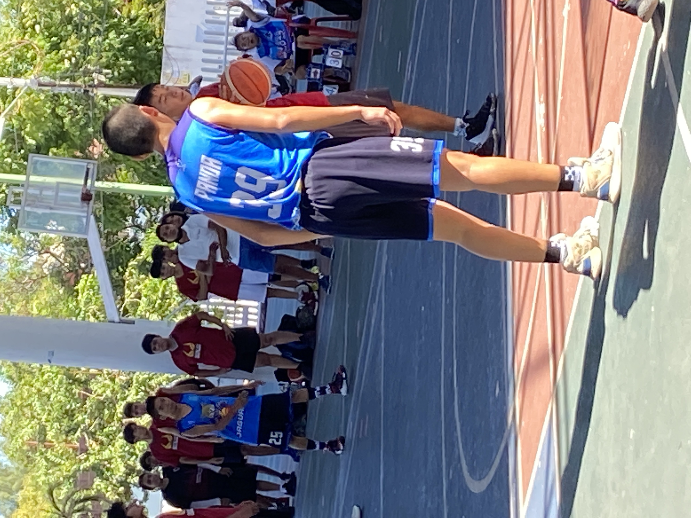
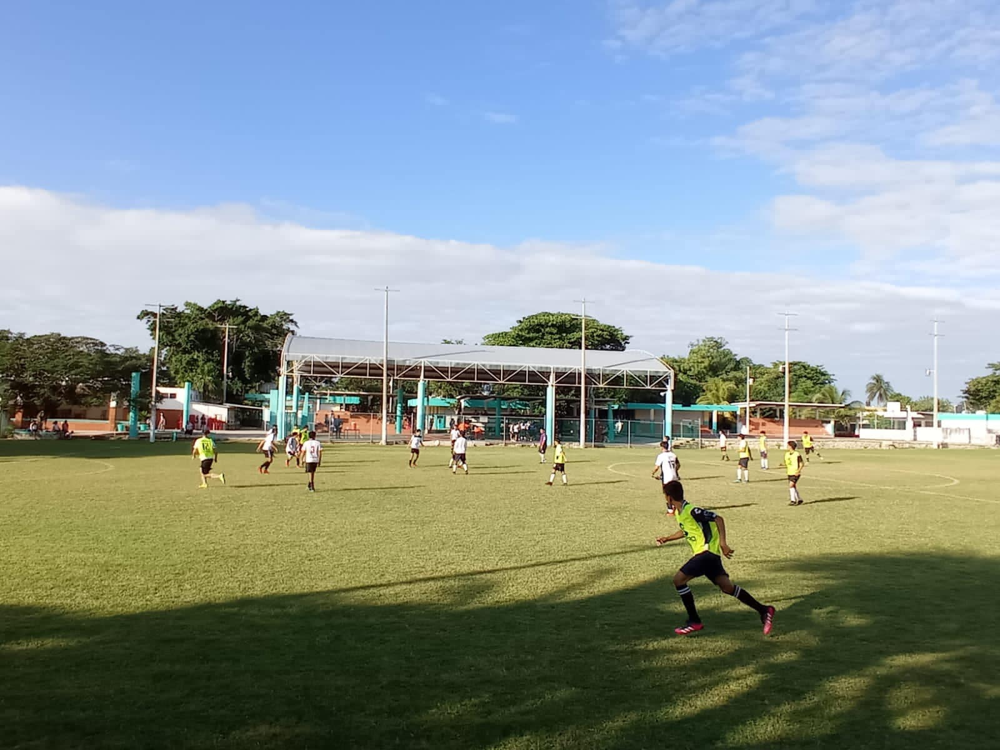
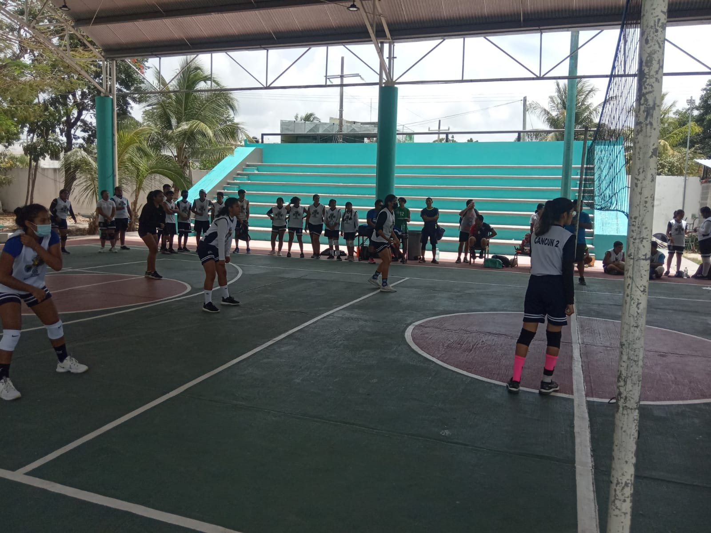
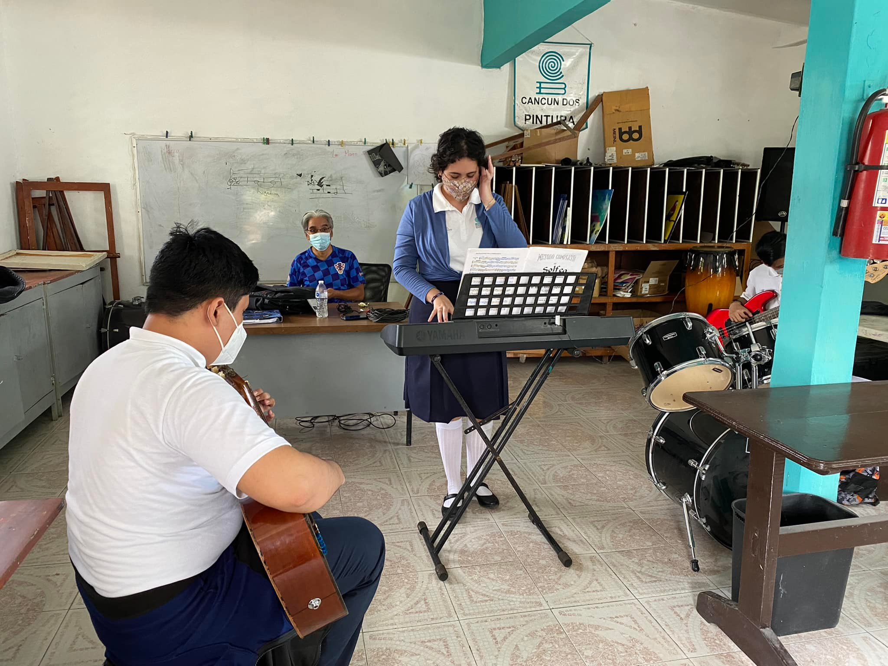
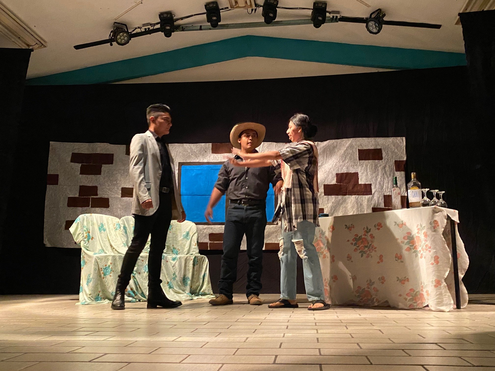
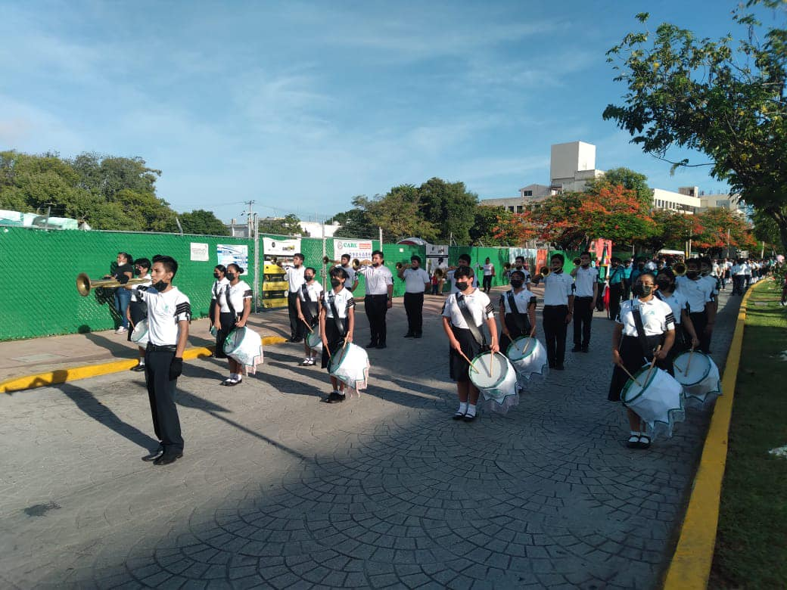

PARESCOLARES
Básquetbol
Ayuda al desarrollo de la concentración, la rapidez, el autocontrol, la confianza o el equilibrio, fortalece los músculos de todo el cuerpo y muy en especial los de las piernas, fomenta el desarrollo del aparato locomotor. Aumenta la resistencia física cuando se entrena a edad temprana como lo podria ser un niño de primaria aunque se debe hacer con moderacion ya que esta en desarollo y tanta carga o mucho esfuerzo fisico en vez de ayudarle o beneficiarle lo podria lastimar y lesionar.
Fútbol
El deporte es algo basico que se deberia implementar en la vida cotidiana, el futbol es uno de los deportes basicos conocidos en todo el mundo, al igual que los demas aunque tiene otras bentajas unicas, te da rapidez, aguilidad, dureza en las piernas y sobre todo debes desarrolar ciertas habilidades como: La recepciòn debe ser la primerhabilidad que debe aprender un futbolista porque es la base sobre la cual se construye todo lo demàs. Significa recibir el balón con un contacto del pie o alguna otra parte del cuerpo permitida por el reglamento, que facilite la siguiente acción técnica, Se refiere a dar pase a un compañero de equipo con el propósito de dejarlo en ventaja para la siguiente jugada: tirar a gol o rematar a la portería rival, que es la finalidad del futbol (meter gol). El golpeo con el pie se puede realizar con el empeine, parte externa o parte interna del pie. Y como último recurso, la punta del pìe.
Voleíbol
Mejora la coordinación, velocidad y equilibrio de individuo debido a sus rápidos cambios de ritmo y dirección. Durante el juego los jugadores están obligados a servir, pasar, atacar, bloquear y clavar la pelota. Esto requieren flexibilidad, equilibrio, fuerza superior e inferior del cuerpo y la velocidad, es uno de los deportes basicos conocidos en todo el mundo que igual tiene las competencias principales de los deportes con pelota, en este plantel los tres deportes con seleccion son futbol, basquetbol y este mismo.
Pintura

La pintura constituye un proceso complejo que tiene una finalidad estética y comunicativa; en ella el estudiante reúne diversos elementos de su experiencia para formar un todo con un nuevo significado; nos proporciona una parte de sí mismo: cómo piensa, cómo siente y cómo ve, por tus emociones y sentimientos puedes expresar con liensos y trasos en un papel o cualquier material, es lo bonito de esta arte que es capaz de expresar algo con una imagen grafica e incluso fisica.
Escolta

Son funciones de los escoltas privados el acompañamiento, defensa y protección de personas determinadas, o de grupos concretos de personas, impidiendo que sean objeto de agresiones o actos delictivos.
Música
Escuchar música beneficia el bienestar en general, ayuda a regular las emociones, y crea felicidad y relajación en la vida cotidiana, también puede trasladarnos a un estado de ánimo mucho más positivo, recordar momentos felices, aumentar la autoestima y la confianza en nosotros mismos, esto mas que nada es una bella arte que para lgunos es una pasion, cuuando escuchan algun sonido o melodia lo sineten y lo expresan, esto ultimo puede pasar en las melodias que creas, los sentimientos y emociones pueden estar en la misma musica.
Teatro
Las obras de teatro son un medio, que al igual que el cine o la literatura, logran que escapemos un momento de la realidad para disfrutar de historias, emociones, actuaciones que entretienen a todas las personas, es una forma de inspiracion para aquellas personas apacionadas por los movimientos de su cuerpo hasta lo pueden usar como uan foprma de lenguaje complejo, sin duda es una de las bellas artes mas complejas pero sadifactorias que existen en el mundo de la literatura.
Banda de Guerra
El programa de bandas de guerra pretende reafirmar los valores cívicos y de identidad en niños y jóvenes de nivel básico así como de estimular sus capacidades físicas coordinativas de orientación, ritmo y adaptación a su medio social, así reafirmando valores, actitudes y habilidades pero sobre todo que fortalezca su identidad nacional y de permanencia a partir de actividades cívicas derivadas de la constitución de bandas de guerra, mismas que están íntimamente relacionadas con las materias de ética, historia de México y relaciones humanas.